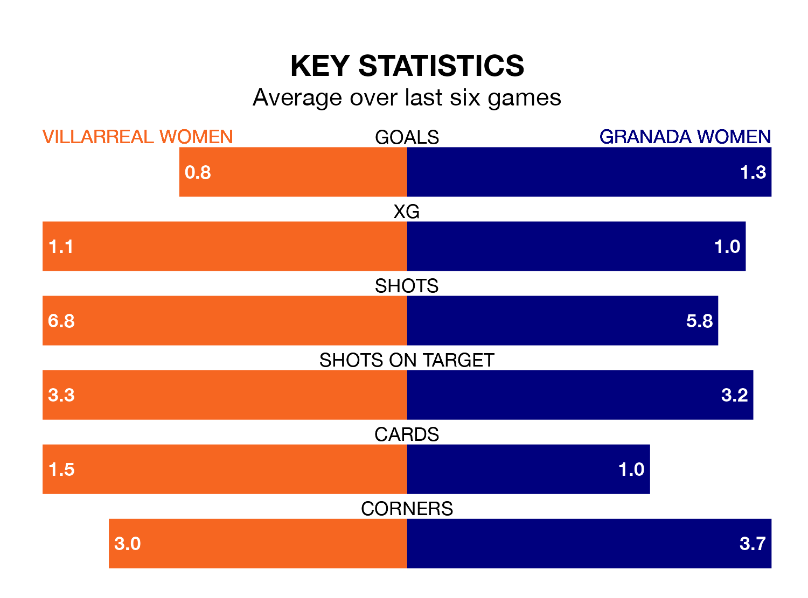

Villarreal Women are on a terrible run ahead of hosting Granada Women at Ciudad Deportiva del Villarreal on Saturday, with just two points collected from their last six games.
Villarreal have picked up two draws and four losses in their last six Liga F games, and face a Granada side whose last six games have brought three wins and three losses.
Villarreal are 13th in the table after 24 games, of which they have won five and drawn six, earning 21 points.
Granada are one place ahead of the home team in 12th, with six wins and three draws putting them on the same number of points.
With 21 goals in 24 games so far this season, Villarreal are the league's third-lowest scorers with 0.9 goals per game. And they are conceding more than average, letting in 45 goals at a rate of 1.9 per game.
The visitors are also below average scorers, with 1.0 goal per game, compared to a league average of 1.6. They have conceded 1.9 goals per game.
Villarreal's last match was on Sunday, a 2-1 loss against Sevilla Women, with Kayla McCoy getting the goal for Villarreal.
Granada beat UD Granadilla Tenerife 2-1 last time out, on Saturday, with Carlota Suárez Crespo and Laura Pérez Martín on the scoresheet.
Updated: 07:59 (UTC), 26/04/24